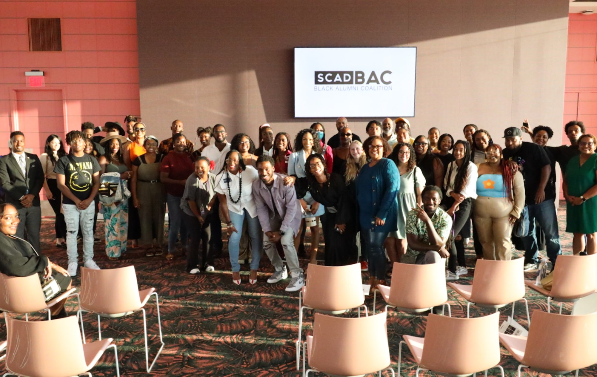
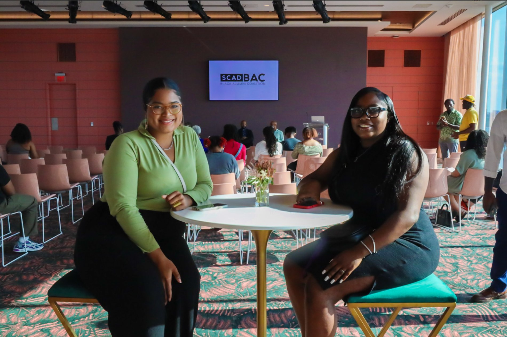

Case Study · June – October 2022
White Waters,
Black Joy
As the elected Events Committee Chair of the SCAD Black Alumni Coalition, bringing a global alumni community offline for the first time — solo, on a minimal budget, with unanimous five-star results.
Context
This wasn't a client engagement.
It was elected leadership in service of community.
The SCAD Black Alumni Coalition is a global community open to all SCAD graduates — part of the SCAD Alumni Society, managed by the Office for Career and Alumni Success. Its mission: to create a lifelong worldwide network of alumni engagement and partnership, increasing opportunities, mentorship, and philanthropic commitment among Black graduates of SCAD. As its elected Events Committee Chair, this work was done entirely in a volunteer capacity. The events committee had one member: me.
The Work
An active community that had
never shared a room.
First gathering. No precedent.
The BAC had been serving its members online — a real, active community that had simply never gathered in person. The task was to design that first physical gathering: meaningful enough to matter, executable on a near-zero budget, and good enough to set the standard for everything that followed.
Design for belonging, not attendance
The concept — "Black Joy in White Spaces" — was chosen deliberately. It named the specific experience of being a Black creative inside a predominantly white institution, and the joy that persists anyway. That framing gave the event cultural weight before anyone walked in. SCAD provided the venue. Everything else was built by one person.
Work Delivered
Every role.
One elected volunteer.
"We appreciate all the time and work you contribute as part of the BAC leadership. We look forward to many more successful events like 'White Waters, Black Joy' and supporting the coalition as it continues to grow."Grace Grund — Director of Alumni Relations, SCAD
In the Room
White Waters, Black Joy
Atlanta, 2022


Photography by Ghenette Bonner · SCAD BAC Atlanta, October 2022
"Alumni said the event built more community than their entire time at SCAD. That's not a metric — that's a mission accomplished."
Impact